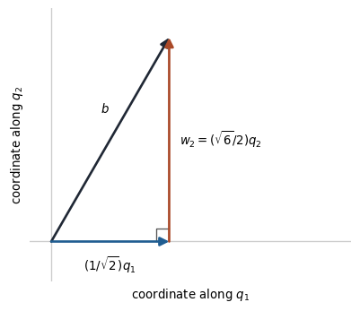

3 Session 2 — Inner Products and Orthogonality
In Session 1, the plane \(U=\{(s,t,s+t)^T:s,t\in\mathbb R\}\) had a basis, and each \(x\in U\) had unique coordinates. But how much of \(x\) lies along a given basis vector? With an arbitrary basis, a coordinate need not answer that question. An inner product lets us measure components. Choosing an orthonormal basis makes those measurements equal to the coordinates.
Allow 45–50 minutes for the text and worked examples and 25–30 minutes for the exercises and recall. The mastery task is to start with independent columns, build an orthonormal basis of their span by hand, and justify each subtraction and division. Throughout, spaces are finite-dimensional over \(\mathbb F=\mathbb R\) or \(\mathbb C\), and coordinate vectors are columns.
3.1 From coordinates to geometry
A vector space specifies which linear combinations can be formed. It takes additional structure to measure their lengths or say that two directions meet at a right angle. Following Kanschat and Scheichl, Appendix A.2, we take the inner product linear in the first argument. For all \(x,y,z\in V\) and \(\alpha,\beta\in\mathbb F\), its axioms are
\[ \begin{aligned} \langle \alpha x+\beta y,z\rangle &=\alpha\langle x,z\rangle+\beta\langle y,z\rangle,\\ \langle x,y\rangle &=\overline{\langle y,x\rangle},\\ \langle x,x\rangle &\ge 0,\qquad \langle x,x\rangle=0 \iff x=0. \end{aligned} \]
Conjugate symmetry gives conjugate linearity in the second argument and ensures \(\langle x,x\rangle\) is real. In real spaces conjugation disappears. The standard Euclidean and Hermitian products are respectively \(y^Tx\) and \(y^*x=\sum_j x_j\overline{y_j}\), where \(y^*=\overline y^T\). For instance, \(x=(1,i)^T\) has \(x^*x=2\), even though \(x^Tx=0\).
The induced length is \(\|x\|=\sqrt{\langle x,x\rangle}\). Two vectors are orthogonal, written \(x\perp y\), if \(\langle x,y\rangle=0\). Geometry depends on the chosen product. In \(\mathbb R^2\), \(u=(1,1)^T\) and \(v=(1,-1)^T\) are Euclidean-orthogonal. With \(W=\operatorname{diag}(4,1)\), the product \(\langle x,y\rangle_W=y^TWx\) gives \(\langle u,v\rangle_W=3\). Its unit circle has equation \(4x_1^2+x_2^2=1\) because displacement along the first axis costs twice as much in length. Orthogonality has changed while spans and linear independence are exactly as before.
One subtraction gives Cauchy–Schwarz
For \(y\ne0\), seek a scalar \(c\) making \(r=x-cy\) perpendicular to \(y\). Linearity in the first slot gives \[ 0=\langle r,y\rangle=\langle x,y\rangle-c\|y\|^2, \qquad c=\frac{\langle x,y\rangle}{\|y\|^2}. \] Since \(x=cy+r\) and both cross terms vanish, expansion yields \[ \|x\|^2=|c|^2\|y\|^2+\|r\|^2 \ge \frac{|\langle x,y\rangle|^2}{\|y\|^2}. \] Taking square roots proves Cauchy–Schwarz, \(|\langle x,y\rangle|\le\|x\|\,\|y\|\). Equality holds exactly when \(x,y\) are linearly dependent (including the case \(y=0\)). Remember the residual \(r\): Gram–Schmidt repeats this construction.
For real nonzero vectors the quotient \(\langle x,y\rangle/(\|x\|\|y\|)\) thus lies in \([-1,1]\) and defines the cosine of their angle. In complex space the quotient may have a phase. Its absolute value gives the cosine of the acute or right angle between the corresponding complex lines, allowing angle zero for coincident lines.
In either field, \[ \|x+y\|^2=\|x\|^2+2\operatorname{Re}\langle x,y\rangle+\|y\|^2. \] Cauchy–Schwarz bounds the right side by \((\|x\|+\|y\|)^2\), giving the triangle inequality. Together with positivity and \(\|\alpha x\|=|\alpha|\|x\|\), this verifies that the induced length is a norm. For orthogonal vectors the middle term vanishes, giving Pythagoras. Over \(\mathbb R\) the identity also implies orthogonality. Over \(\mathbb C\) it only forces the real part to vanish, as \(1\) and \(i\) illustrate.
3.2 Orthogonal complements turn span questions into kernel questions
An orthogonal family has \(u_i\perp u_j\) for \(i\ne j\). An orthonormal family also has \(\|u_i\|=1\), so \(\langle u_i,u_j\rangle=\delta_{ij}\) (one for equal indices and zero otherwise). Any orthogonal family of nonzero vectors is independent: taking the inner product of \(\sum_i c_i u_i=0\) with \(u_j\) gives \(c_j\|u_j\|^2=0\) for every \(j\).
For a subspace \(U\subseteq V\), define \[ U^\perp=\{z\in V:\langle z,u\rangle=0\text{ for every }u\in U\}. \] Linearity makes this a subspace. Testing a spanning family suffices because the inner product with any linear combination of its members also vanishes. In the standard geometry, if \(U=\operatorname{im} B\), this turns the geometric definition into the Session 1 operation of solving a homogeneous system: \[ z\in U^\perp \iff B^*z=0. \] Indeed, each entry of \(B^*z\) tests one column. For a map \(A:\mathbb F^n\to\mathbb F^m\) the two corresponding identities are \[ (\operatorname{im} A)^\perp=\ker A^*\subseteq\mathbb F^m, \qquad (\operatorname{im} A^*)^\perp=\ker A\subseteq\mathbb F^n. \] The second follows by applying the first to \(A^*\). Abstractly, the adjoint satisfies \(\langle Ax,y\rangle=\langle x,A^*y\rangle\). The conjugate-transpose formula assumes standard products in coordinates (or orthonormal bases). For example, with ambient product \(y^*Wx\), testing the columns of \(B\) gives \(B^*Wz=0\).
The plane from Session 1. Take its natural spanning columns \[ a=(1,0,1)^T,\qquad b=(0,1,1)^T,\qquad B=[\,a\ b\,]. \] They are independent but \(a^Tb=1\). A vector \(z\) perpendicular to the plane satisfies \(z_1+z_3=z_2+z_3=0\), hence \[ U^\perp=\operatorname{span}\{n\},\qquad n=(-1,-1,1)^T. \] The equation of the plane itself is \(n^Tx=0\). Thus the same plane is an image when built from spanning directions and a kernel when specified by its normal. In \(\mathbb R^2\) the analogous calculation sends the line through \((s,t)^T\ne0\) to the line through \((-t,s)^T\).
3.3 Orthonormal coordinates and orthogonal decomposition
Suppose \(q_1,\ldots,q_k\) is an orthonormal basis of \(U\). For \(x=\sum_i c_iq_i\) in \(U\), pairing with \(q_j\) isolates \(c_j\). In standard coordinates, writing \(Q=[\,q_1\ \cdots\ q_k\,]\), we obtain \[ c_j=\langle x,q_j\rangle=q_j^*x,\qquad c=Q^*x,\qquad x=Qc. \] Session 1 used \(B\) to assemble a vector from its coordinates. For an orthonormal basis, the adjoint reads those coordinates back: the \((i,j)\) entry of \(Q^*Q\) is \(q_i^*q_j=\delta_{ij}\). Therefore \(Q^*Q=I_k\) and \(\|Qc\|_2^2=c^*Q^*Qc=\|c\|_2^2\). A rectangular \(Q\) is an isometry from coordinate space onto \(U\). A square \(Q\) additionally satisfies \(QQ^*=I\) and is called unitary, or orthogonal over the reals. For \(k<n\), a nonzero normal to \(U\) is sent to zero by \(Q^*\), so \(Q^*\) cannot be a two-sided inverse.
What if \(x\) is anywhere in \(V\)? Form \[ u=\sum_{j=1}^k\langle x,q_j\rangle q_j,\qquad z=x-u. \] Testing \(z\) against each \(q_i\) gives zero, so \(u\in U\) and \(z\in U^\perp\). The decomposition is unique: two such decompositions would give a difference in \(U\cap U^\perp\), where a vector is orthogonal to itself and hence zero. We have proved \[ V=U\oplus U^\perp,\qquad \dim V=\dim U+\dim U^\perp. \] The dimension count follows by concatenating bases of the two summands. The construction in the next section supplies the orthonormal basis used in this proof for every nonzero subspace (the zero subspace uses the empty basis).
Check in the running plane. For \(x=(0,0,3)^T\), the coefficient along its normal \(n\) is \(n^Tx/(n^Tn)=1\). Thus \(x=(1,1,2)^T+n\). The first term equals \(a+b\) and is perpendicular to \(n\). The squared lengths are \(9=6+3\).
3.4 Gram–Schmidt from the residual equation
Given independent \(a_1,\ldots,a_k\), we want each new basis vector to contribute the direction still missing from the preceding span. Suppose \(q_1,\ldots,q_{j-1}\) already form an orthonormal basis of that span. Write \(w_j=a_j-\sum_{i<j}c_iq_i\). Requiring \(\langle w_j,q_\ell\rangle=0\) gives \(c_\ell=\langle a_j,q_\ell\rangle\). This determines classical Gram–Schmidt: \[ w_j=a_j-\sum_{i=1}^{j-1}\langle a_j,q_i\rangle q_i, \qquad q_j=\frac{w_j}{\|w_j\|},\qquad j=1,\ldots,k. \] The first sum is empty, so \(w_1=a_1\). Subtraction orthogonalizes the residual against the earlier vectors. Division normalizes its length. Division alone leaves any nonzero pairwise correlation in place.
Why the algorithm works. Each \(w_j\) belongs to the first \(j\) input vectors’ span. It is nonzero, since \(w_j=0\) would express \(a_j\) in the preceding span. Testing against the earlier \(q_i\) proves orthogonality, and normalization yields unit length. Conversely, \(a_j=\|w_j\|q_j+\sum_{i<j}\langle a_j,q_i\rangle q_i\). Starting with \(q_1\), induction now gives \[ \operatorname{span}\{q_1,\ldots,q_j\} =\operatorname{span}\{a_1,\ldots,a_j\}\quad\text{at every step.} \] For a dependent input column a zero residual signals that its entire direction is already represented. In exact arithmetic one can skip that column when constructing a basis of the image.
Worked construction in the running plane
Start with \(a_1=a=(1,0,1)^T\) and \(a_2=b=(0,1,1)^T\). The first direction and the coefficient of the second vector along it are \[ q_1=\frac{(1,0,1)^T}{\sqrt2},\qquad \langle b,q_1\rangle=\frac{1}{\sqrt2}. \] Subtracting the parallel component gives \[ w_2=b-\tfrac12(1,0,1)^T =\tfrac12(-1,2,1)^T,\qquad \|w_2\|=\frac{\sqrt6}{2},\qquad q_2=\frac{(-1,2,1)^T}{\sqrt6}. \] Viewed inside the plane, \(b\) is the diagonal of a right triangle. Its two legs are the amount already represented and the residual that supplies the new direction.
The matrix check uses just three dot products: \[ Q=\begin{pmatrix} 1/\sqrt2 & -1/\sqrt6\\ 0 & 2/\sqrt6\\ 1/\sqrt2 & 1/\sqrt6 \end{pmatrix}, \qquad Q^TQ=\begin{pmatrix} (1+1)/2 & (-1+1)/\sqrt{12}\\ (-1+1)/\sqrt{12} & (1+4+1)/6 \end{pmatrix}=I_2. \] For \(x=(3,1,4)^T=3a+b\) from Session 1, \(Q^Tx=(7/\sqrt2,3/\sqrt6)^T\). The squared coordinate length is \(49/2+9/6=26=\|x\|_2^2\). The coefficients \((3,1)^T\) in the original basis describe the same vector, but their squared length is only \(10\).
3.5 What changes in numerical algorithms?
Classical and modified Gram–Schmidt. For classical Gram–Schmidt each coefficient uses the original \(a_j\). Modified Gram–Schmidt (MGS) initializes \(w=a_j\) and, for each earlier \(q_i\) in order, computes \(h=\langle w,q_i\rangle\) and updates \(w\leftarrow w-hq_i\). It then normalizes the final \(w\). In exact arithmetic, previously subtracted directions have zero inner product with \(q_i\), so both algorithms give the same coefficients and residual. In floating point, cancellation can leave a residual whose rounding error is large relative to its length. Normalizing magnifies that error. MGS measures what is present in the updated vector and generally retains orthogonality better. Severe near-dependence can still require a second orthogonalization pass or a numerical rank decision. Monitoring \(\|Q^*Q-I\|\) tests the property one intended to construct.
Why basis quality matters. Consider \(B_\varepsilon=[\,e_1,\ e_1+\varepsilon e_2\,]\) for real \(\varepsilon>0\). It spans \(\mathbb R^2\), yet \(e_2\) requires coordinates \((-1/\varepsilon,1/\varepsilon)^T\). Two large contributions nearly cancel. With an orthonormal \(Q\), \(\|Q\,\delta c\|_2=\|\delta c\|_2\): every singular value of \(Q\) is one. This is a statement about the basis representation. A nearly dependent input may still make its inferred span sensitive to perturbations. Recording the coefficients that express each input in the successive \(q_i\) gives the triangular factor in QR (Session 4).
Why the seminar alternates filtering and orthonormalization. Power iteration normalizes one nonzero vector after multiplying by \(A\). Subspace iteration applies \(A\) to a block and orthonormalizes its columns. Normalizing columns individually controls lengths but lets several columns align with the same dominant direction. For a Chebyshev filter \(p\), an eigenvector \(v\) with eigenvalue \(\lambda\) satisfies \(p(A)v=p(\lambda)v\). Thus each eigencomponent is rescaled and the trial subspace can move: \[ Y=p(A)Q,\qquad \operatorname{im}Y=p(A)(\operatorname{im}Q). \] In contrast, if \(Y\) has independent columns, \(Q_{\mathrm{new}}=\operatorname{orth}(Y)\) has exactly the same image as \(Y\) in exact arithmetic. Filtering changes the balance of spectral components. Orthonormalization changes the coordinates used to represent the resulting subspace. If the filter annihilates a direction and reduces rank, orthogonalization alone cannot restore it.
Where the same residual appears. Arnoldi takes \(Aq_j\), removes components along the current Krylov basis, and normalizes the remainder if nonzero. For Hermitian \(A\), Lanczos uses symmetry to obtain a short recurrence in exact arithmetic. Both methods need accurate orthogonality to interpret the resulting small matrix. Session 3 develops the projection underlying the residual. Rayleigh–Ritz later uses \(Q^*AQ\) to represent the action seen within a trial subspace and asks for a residual perpendicular to that subspace.
Reading connections. Kanschat and Scheichl, Appendix A.2 and §2.1, give the convention and two Gram–Schmidt algorithms used here. Bastian, §5 and Algorithm 11.2, connects inner-product geometry to orthogonalization. Scheichl and Zech, §§3.8–3.9, give the subsequent least-squares and QR context.
3.6 Independent exercises
Allow about 25 minutes. Keep the solutions covered until you have a derivation or a calculation to check.
- Choosing a geometry. On \(\mathbb C^2\) set \(\langle x,y\rangle_W=2x_1\overline{y_1}+x_2\overline{y_2}\). Verify the axioms. Find a nonzero vector perpendicular to \((1,i)^T\) in this product. Check your answer against the standard product.
- Recovering a normal. For \(a,b\) from the running plane, find \((\operatorname{im} B)^\perp\) by row equations. Which \(d\) make \(Bc=d\) solvable? Explain why the same vector answers both questions.
- Decomposing a vector. Decompose \(e_1\) into a vector in the running plane and a vector in its complement. Verify membership and Pythagoras. Explain why a second decomposition is impossible.
- Orthogonalization by hand. Apply classical Gram–Schmidt in order to \((1,1,0)^T\), \((1,0,1)^T\), \((0,1,1)^T\). Give all three unit vectors. Verify orthogonality and express the last input in your new basis.
- Complex coordinates. Let \(q=(1,i)^T/\sqrt2\) and \(x=(i,0)^T\). Find the scalar \(c\) such that \(x-cq\perp q\). Check what happens if you reverse the two arguments when computing \(c\). Prove for any orthonormal family that \(\sum_j|\langle x,q_j\rangle|^2\le\|x\|^2\), and characterize equality.
- A filtered block. Let \(Q=[\,(e_1+e_3)/\sqrt2,\ e_2\,]\) in \(\mathbb R^3\), and suppose \(p(A)=\operatorname{diag}(4,2,1)\). Find \(Y=p(A)Q\) and an orthonormal basis of its image. Decide whether filtering and then orthonormalizing each changed the span in this example. Would normalizing columns separately suffice for a general filtered block? Justify your answer.
3.7 Worked solutions
Choosing a geometry
Each summand is linear in \(x\), and swapping \(x,y\) conjugates the sum because the weights are real. The value on \((x,x)\) is \(2|x_1|^2+|x_2|^2\), strictly positive for \(x\ne0\). Orthogonality to \((1,i)^T\) requires \(2z_1-iz_2=0\). Choose \(z=(1,-2i)^T\): the weighted test is \(2+(-i)(-2i)=0\), whereas the standard test gives \(1-2=-1\).
Recovering a normal
The two tests are \(z_1+z_3=0\) and \(z_2+z_3=0\). Putting \(z_3=t\) gives \(z=t(-1,-1,1)^T=tn\). Also \(Bc=(c_1,c_2,c_1+c_2)^T\). Thus solvability requires and suffices that \(d_3=d_1+d_2\), or \(n^Td=0\). The normal annihilates both columns, and its perpendicular plane has the same dimension as the column span.
Decomposing a vector
Write \(e_1=u+tn\). Pairing with \(n\) gives \(t=-1/3\). Hence the perpendicular part is \((1,1,-1)^T/3\) and \(u=(2,-1,1)^T/3\) lies in the plane since \(2-1=1\). The squared lengths are \(3/9\) and \(6/9\), which sum to one. Two decompositions would put their difference in both the plane and its perpendicular line, whose intersection is zero.
Orthogonalization by hand
The first unit vector is \(q_1=(1,1,0)^T/\sqrt2\). Removing \((1,1,0)^T/2\) from the second input leaves \((1,-1,2)^T/2\), so \(q_2=(1,-1,2)^T/\sqrt6\). For \(a_3=(0,1,1)^T\), the first two coefficients are \(1/\sqrt2\) and \(1/\sqrt6\). The remaining vector is \[ w_3=(0,1,1)^T-\tfrac12(1,1,0)^T-\tfrac16(1,-1,2)^T =\tfrac23(-1,1,1)^T. \] Thus \(q_3=(-1,1,1)^T/\sqrt3\). The unscaled dot products are \(1-1=0\), \(-1+1=0\), and \(-1-1+2=0\); the denominators are precisely the lengths. Reconstruction gives \(a_3=q_1/\sqrt2+q_2/\sqrt6+(2/\sqrt3)q_3\).
Complex coordinates
\(c=q^*x=i/\sqrt2\) gives \(x-cq=(i,1)^T/2\) and \(q^*(x-cq)=0\). The reversed product gives \(-i/\sqrt2\), leaving coefficient \(q^*x-(-i/\sqrt2)=\sqrt2\,i\) along \(q\). For the general claim, let \(u=\sum_j\langle x,q_j\rangle q_j\). Orthonormality gives \(\|u\|^2=\sum_j|\langle x,q_j\rangle|^2\), while \(x-u\perp u\). Thus \(\|x\|^2=\|u\|^2+\|x-u\|^2\). Equality holds precisely when \(x\) lies in the span of the family.
A filtered block
The columns of \(Y\) are \((4,0,1)^T/\sqrt2\) and \(2e_2\). They are perpendicular, so dividing each by its length gives \((4,0,1)^T/\sqrt{17}\) and \(e_2\). Originally the plane obeyed \(x_1=x_3\). Its filtered image obeys \(x_1=4x_3\), so filtering changed the plane. Orthonormalization just rescaled these particular columns. In general, \(\langle p(A)q_i,p(A)q_j\rangle=q_j^*p(A)^*p(A)q_i\) can be nonzero even if \(q_j^*q_i=0\). Dividing by lengths cannot remove that component.
3.8 End-of-session mastery checklist
Without consulting the notes, you should be able to:
- State the inner-product axioms, identify the linear slot, and compute a complex coefficient with the correct conjugation.
- Derive Cauchy–Schwarz by constructing a perpendicular residual and identify when equality holds.
- Compute a complement as a kernel and explain which ambient space contains it.
- Construct \(x=u+z\) with \(u\in U\), \(z\in U^\perp\), and prove uniqueness and the dimension identity.
- Recover coordinates with \(Q^*\), verify \(Q^*Q=I\), and explain why orthonormal coordinates preserve length.
- Perform Gram–Schmidt on independent columns and prove nonbreakdown, orthonormality, and preservation of every successive span.
- Identify which vector classical and modified Gram–Schmidt use to compute each coefficient, and explain the risk when a residual is tiny.
- Distinguish the subspace change caused by a polynomial filter from the basis change caused by orthonormalization.
Ready for Session 3: reconstruct Exercise 4 on blank paper and explain why the parallel component you subtracted was uniquely determined. That uniqueness is the starting point for orthogonal projection.